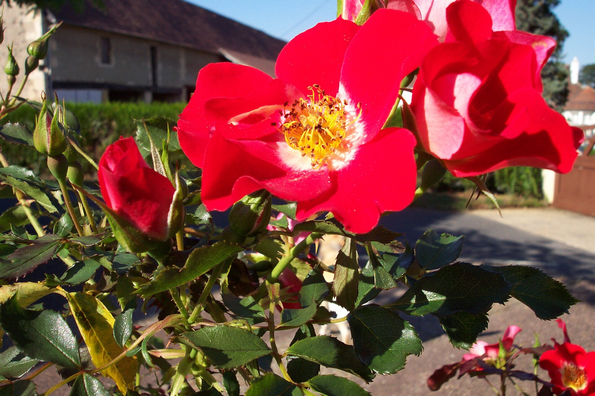
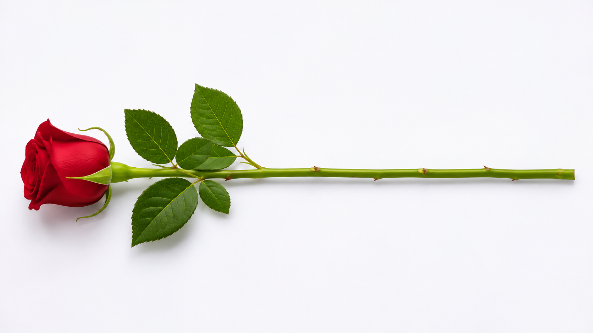
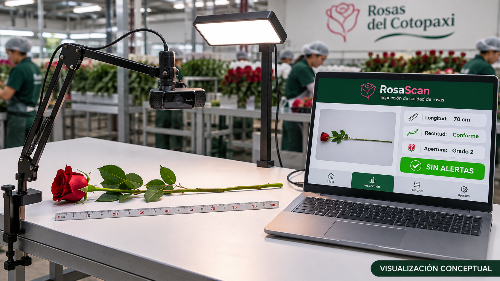
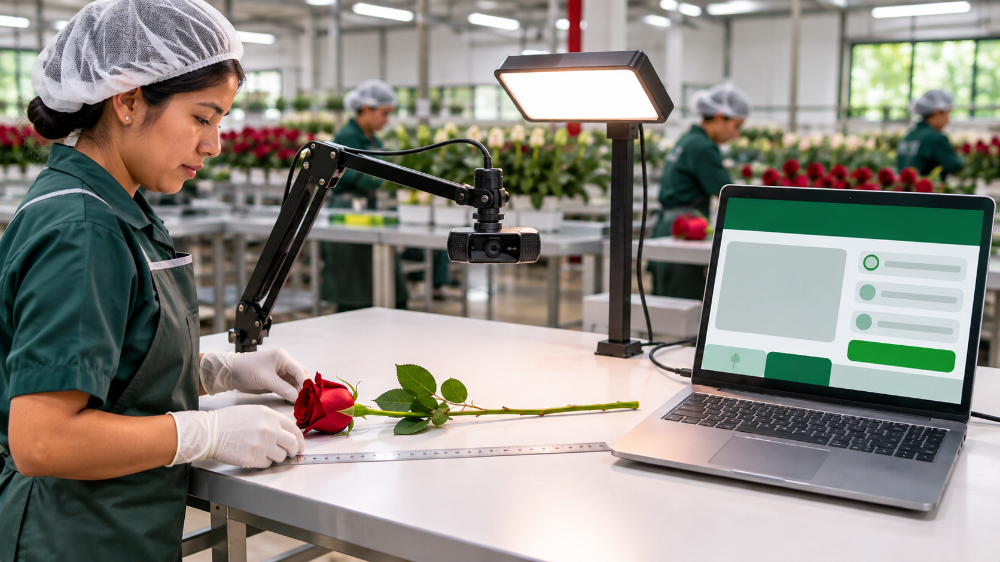
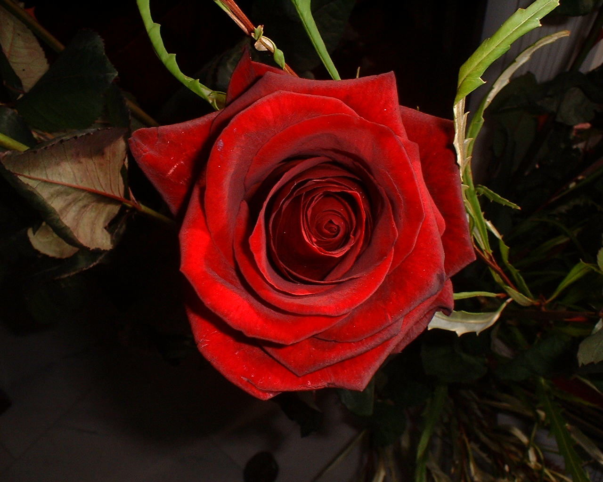

Bloomik
Calidad a primera vista.
Inspección inteligente de rosas en poscosecha.
Jordy Quimbita · Marlon Chacón · Danilo Tapia · David Toro · Lisbeth Yupangui
UNIVERSIDAD DE LAS FUERZAS ARMADAS ESPE

Cada detalle cuenta antes de exportar.
La clasificación considera características visibles de la rosa completa.

Una cámara. Tres verificaciones.
Haz clic en cada criterio para destacar su zona de inspección.

Visualización conceptual. Prototipo no construido.Se integra a una mesa de trabajo.
Una estación sencilla que acompaña al operario.
Cámara Full HD
Situada sobre la superficie de inspección.
Zona de inspección
Rosa completa y referencia de longitud.
Computadora y pantalla
Presenta los resultados en el mismo puesto.
Demostración del proceso en estación.

Una pantalla que se entiende al instante.
Selecciona un ejemplo y presiona Iniciar inspección.
Innovar también es simplificar.
SUSTITUIR
Apoyar las revisiones repetitivas.
COMBINAR
Tres controles en una estación.
ADAPTAR
Criterios según el comprador.
MODIFICAR
Alertas visuales sencillas.
OTROS USOS
Aprender de las inspecciones.
ELIMINAR
Equipos y pasos innecesarios.
REORGANIZAR
Revisar antes de agrupar.
Una estación piloto, con inversión controlada.
Una prueba piloto pequeña antes de invertir en una solución mayor.
La calidad no se improvisa. Se verifica.
Probar en una estación.
Medir si aporta valor.
Escalar solo si funciona.
